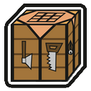
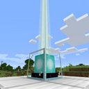

Forge 31.2.55
Forge est l'outil permettant d'installer des mods sur Minecraft, il est donc absolument nécessaire et est très facile d'installation: il suffit d'avoir déjà lancé la version 1.15.2 de Minecraft et de suivre les indications de l'installeur.
Génération
Terraforged 0.1.3
Terraforged modifie la génération du monde pour y apporter plus de réalisme. Ainsi, les fleuves vont toujours à la mer en descendant, les montagnes sont plus escarpées, les plaines plus grandes, etc. Il apporte aussi son lot de nouveaux arbres et types de terrains.
Biome O' Plenty 10.0.0.366
Biome O' Plenty rajoute un grand nombre de biomes au jeu. Il ajoute aussi de nouvelles plantes, fleurs, de nouveaux arbres et blocs de construction. Il est parfaitement compatible avec Terraforged et assure une expérience de jeu enrichie tout en étant très proche de Minecraft vanilla.
Simple Farming 1.3.4
Simple Farming ajoute de nouvelles ressources agricoles et arboricoles
à exploiter, toutes générées sur la carte naturellement. Il ajoute aussi tout un tas de nourritures
à créer à partir des nouvelles et anciennes ressources. Ce mod, assez complet, améliore grandement
les différentes fermes du jeu, et permet aux colons de se diversifier plus dans la production de
ressources agricoles.
Simple Farming dispose d'un wiki très
complet et très utile pour aborder toutes les facettes du mod.
Serene Seasons 3.0.0.92
Serene Seasons est un mod qui ajoute des saisons. Les couleurs de l'herbe et du feuillage changeront tout au long de l'année, et en hiver, les températures changeront et permettront à la neige de tomber dans certains biomes qui n'en reçoivent normalement pas. Les saisons affectent également diverses autres caractéristiques, comme la croissance des cultures (les différentes cultures sont limitées à différentes saisons), la météo (plus de pluie au printemps, plus de tempêtes en été, etc.), et plus encore ! Serene Seasons fonctionne également automatiquement avec tous les mods de biome, changeant leurs couleurs d'herbe et de feuillage sans aucun réglage supplémentaire requis!
Simply Tea ! 2.2.1
Simply Tea ! ajoute un théier duquel récupérer des feuilles de thé,
ainsi que différentes variantes de thé au jeu. Son intérêt est purement RP et économique. Cependant,
les différents thés donnent des effets intéressant aux colons qui les consomment.
Par ailleurs, un wiki
est disponible.
Utilitaires
Ancient Guns 3.0
Ancient Guns rajoute des armes à feu de l'époque Moderne (du XVème au XIXème siècle) avec plusieurs étapes donnant accès à de meilleures armes.
AstikorCarts 1.0.4
AstikorCarts rajoute plusieurs chariots utilisables dans le jeu par des chevaux. Ces chariots permettent de transporter des ressources ou des animaux facilement.
Backpacked 1.8.1
Backpacked ajoute un sac à dos transportable. Ce dernier rajoute une barre d'inventaire aux colons et est accessible en appuyant sur une touche paramétrable.
Better Than Mending 1.1.1b
Better Than Mending modifie le fonctionnement de l'enchantement Mending (raccommodage) pour que les colons puissent réparer leurs outils au moyen d'un sneak + clic droit souris. La réparation consomme autant d'expérience que si elle était naturellement absorbée par l'outil. Les fermes à XP n'étant pas autorisé, ce mod permet de restaurer ses outils malgré tout.
Bookshelf 5.6.40
Bookshelf est une librairie nécessaire au fonctionnement du mod ci-dessous.
Coins JE 1.0.2
Coins JE ajoute une variété de pièces à utiliser en tant que monnaie pour les colons. Il existe 5 tiers de pièces ayant chacune une valeure 9 fois supérieure à la précédente.
Extra Boats 1.3.6
Extra Boats rajoute au jeu plusieurs nouveaux types de bateau, pour le transport de ressources, de personnes, ou pour naviguer plus rapidement. Ce mod est compatible avec les nouveaux bois fournis par Biome O' Plenty.
JourneyMap 5.7.0
JourneyMap propose une carte qui sera mise à jour petit à petit par rapport à ce que le colon découvrira. Les colons peuvent aussi placer des points de repère sur la carte et afficher cette dernière sur un écran différent via leur navigateur préféré.
Chunk Loaders 1.1.7
Chunk Loaders ajoute différents blocs permettant de maintenir des chunks chargés, comme si un joueur était à l'intérieur. Cela permet aux produits agricoles de grandir malgré l'absence de colons aux alentours.
Sit 1.3.1
Sit permet aux colons de s'asseoir sur des escaliers ou des dalles basses comme si ils étaient dans un wagonnet ou sur une monture.
Aquaculture 2 2.0.23
Aquaculture 2 étend le système de pêche dans Minecraft avec plus de 30 nouveaux poissons à attraper ou trouvé en train de nager dans la nature. Il ajoute également une série de nouvelles cannes qui vous permettent d'équiper des hameçons et des appâts pour des fonctionnalités supplémentaires. Chaque type de biome - même les biomes modifiés - a de nouveaux types de poissons qui embellira votre expérience de pêche et votre monde !
Outils

En téléchargement direct à l'adresse : https://www.curseforge.com/minecraft/mc-mods/crafttweaker/download/2949785/file
CraftTweaker 6.0.0.24
CraftTweaker permet aux administrateurs de rajouter des recettes de fabrication dans le jeu. Ces recettes peuvent être votées de façon similaire à une loi, ceci pour permettre aux colons d'accéder plus facilement et de façon Role Play à certains objets, par exemple.
En téléchargement direct à l'adresse : https://www.curseforge.com/minecraft/mc-mods/offlineskins/download/2953946/file
Tous les colons sont bienvenus ! OfflineSkins permet aux colons de voir le formidable skin des colons ayant acheté le jeu.
Cloth Config 2-3.0
Cloth Config est une librairie nécessaire au fonctionnement du mod ci-dessous.
Light Overlay 4.7.2
Nova Francia est une colonie aspirant à la paix. Light Overlay permet aux colons de voir les zones de danger pour mieux les éclairer.
Optifine G6
Optifine est un mod d'optimisation du moteur de rendu 3D et permet d'améliorer globalement les performances des colons. Optifine supporte aussi les shaders.
MixinBootstrap 1.0.5
MixinBootstrap est une librairie nécessaire au fonctionnement des 2 mods ci-dessous.
Lithium (Forge) 0.4.6.rc3
Lithium est un mod permettant d'optimiser le fonctionnement interne du jeu. Il interagit sur la physique du jeu, les IA et autre pour permettre au serveur de mieux fonctionner.
Phosphor (Forge) 0.5.2 build.4
Phosphor optimisant le moteur de lumière du jeu. Le temps passé par le serveur et le client à générer un chunk est largement réduit.
De plus, Nova Francia utilise plusieurs datapacks, listés ci-dessous:

En téléchargement direct à l'adresse :
Bigger Beacon Radius 1
Bigger Beacon Radius double la distance à laquelle un colon est affecté par l'effet d'un beacon.
Anti Ghast Grief 1.1.0
Anti Ghast Grief empêche les Ghasts de causer des dégâts aux structures.